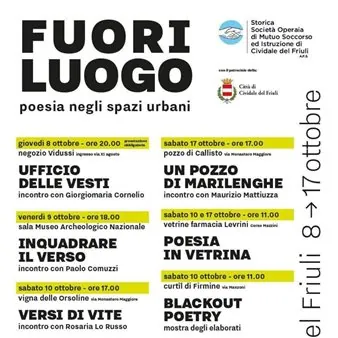

da gio 8 ott a dom 25 ott
Incontri SOMSI 2026: Fuori Luogo
Il titolo Fuori Luogo gioca sia sul concetto di spazio atipico sia sulla sensazione di disorientamento che la poesia contemporanea sa generare quando rompe la routine. È un progetto di rigenerazione culturale e riappropriazione urbana che nasce per riattivare il tessuto sociale…
 Indicazioni
Indicazioni
- Costi e prenotazioni
- Costo non indicato · Prenotazione non indicata
- Programma
- Programma da verificare. Apri la fonte ufficiale per orari e possibili aggiornamenti.
- In caso di maltempo
- Nessuna indicazione specifica pubblicata.
- Note
- Acquisito automaticamente dalla fonte.
L’EVENTO
Descrizione completa
Il titolo Fuori Luogo gioca sia sul concetto di spazio atipico sia sulla sensazione di disorientamento che la poesia contemporanea sa generare quando rompe la routine. È un progetto di rigenerazione culturale e riappropriazione urbana che nasce per riattivare il tessuto sociale ed emotivo di una comunità attraverso la forza della parola poetica portando la poesia fuori dai luoghi deputati e restituendola alla quotidianità. Gli autori e le autrici ospiti non si limiteranno a una semplice lettura frontale, ma condivideranno con il pubblico un vero e proprio racconto di sé, offrendo il proprio modo di pensare, ragionare e vivere il mondo e la poesia stessa. Il percorso si articola in 6 incontri, ciascuno progettato come un'esperienza immersiva basata sul dialogo tra parola, corpo, immagine e architettura urbana. La scelta delle location non è un semplice fondale scenografico, ma il motore concettuale del format. Ogni luogo detta il ritmo, la voce e la forma dell’incontro.
Programma:
giovedì 8 ottobre - ore 20:00 - Negozio Vidussi
Ufficio delle vesti
Incontro con Giorgiomaria Cornelio
prenotazione obbligatoria
venerdì 9 ottobre - ore 18:00 - Museo Archeologico Nazionale
Inquadrare il verso
Incontro con Paolo Comuzzi.
sabato 10 ottobre - ore 17:00 - Monastero di Santa Maria in Valle
Versi di vite
Incontro con Rosaria Lo Russo
giovedì 15 ottobre - ore 18:00 - CiviBank, via sen. G. Pelizzo
Poesie fuori bilancio
Incontro con Fabio Franzin
venerdì 16 ottobre - ore 18:00 - sede Ass. Musicale Sergio Gaggia, Parco Italia
Izba in città
Incontro con Andreina Trusgnach Čekova
sabato 17 ottobre - ore 17:00 - Pozzo di Callisto
Un pozzo di Marilenghe
Incontro con Maurizio Mattiuzza
sabato 10 e sabato 17 ottobre - ore 11:00 - Vetrina Palazzo Levrini-Stringher
Poesia in vetrina
Laboratorio di Blackout poetry con le ragazze e i ragazzi del liceo “Paolo Diacono”
Sabato 10 ottobre, ore 11:00 - Curtîl di Firmine BLACKOUT POETRY - MOSTRA DEGLI ELABORATI
Gli spazi del Curtîl di Firmine ospitano le opere nate dal laboratorio di Blackout poetry, la tecnica di scrittura creativa che trasforma la cancellazione in rivelazione, una vera e propria arte del sottrarre.
Partendo da pagine stampate già esistenti, i partecipanti hanno oscurato, cancellato e ridisegnato il testo con pennarelli, colori e illustrazioni, facendo affiorare solo le parole a loro necessarie.
Ciò che resta è un nuovo paesaggio poetico con un processo che ribalta l’idea classica di scrittura: sottrarre parole per liberare nuovi significati, trasformando un foglio di scarto in un’opera visiva e poetica al tempo stesso.
Dal 10 al 25 ottobre, Via Ristori 8 LUOGHI SOSPESI - POESIA IN-ATTESA Luoghi sospesi è un esercizio di risveglio per lo sguardo, trasforma un vuoto urbano i una cassa di risonanza poetica.
Gigantografie di scorci cittadini, apparentemente secondari, svelano una bellezza potente e inaspettata.
Dall’alto, come una pioggia, i versi dei poeti contemporanei scendono verso chi entra e lo avvolgono in una spirale di voci.
Chi entra si ritrova a camminare in una foresta di immagini e parole che spinge a rallentare.
È un invito a cambiare rotta, a trovare un altro sguardo, a disimparare in fretta. A cura della Società Operaia di Mutuo Soccorso
tel. 0432 734116; mail: info@somsicividale.it
IL PROGRAMMA
Programma e orari
Appuntamenti raccolti dalle fonti elencate. Dove manca un orario, non è ancora disponibile in questa scheda.
Programma pubblicato
- Dal 2026-10-08 al 2026-10-25
INFORMAZIONI UTILI
Prima di partire
- Controllare la fonte prima di partire.
ORGANIZZAZIONE